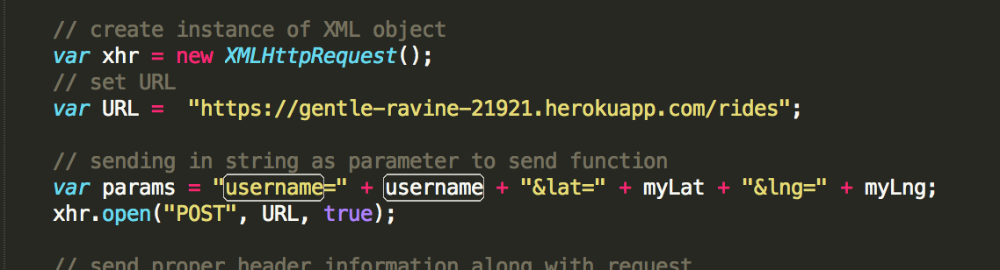
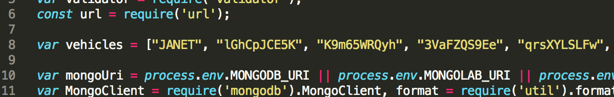
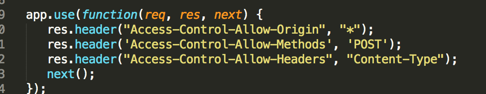
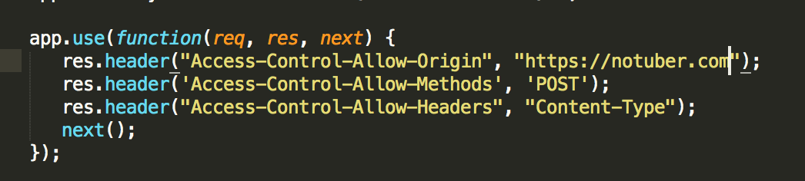

Assignment 4: Web Security
Introduction:
Notuber is a ride sharing service app that allows passengers and drivers in the network to
view on a rendered map who has been waiting for their respective service in the last five
minutes. This application deals with a signficicant amount of user data as the google maps
API detects a user's latitude and longitude, and then the client sends that information to the
server, which extracts the data recorded within the last five minutes. I have been hired to
identify any web vulnerabilities on both the client side and server side of this application,
and will test potential flaws using attacks and source code analysis
Methodology:
Without looking at the source code, I tried using Tamper Data for FireFox but shortly realized
that it was not compatibile with my version of Firefox. Therefore, most of my testing consisted of
using the command curl, query strings, and source code analysis to identify vulnerabilities.
First, I tried a mongdodb injection by sending https://immense-lowlands-53324.herokuapp.com/vehicle.json?username{$ne}=JANET as a URL. The query string tries to fetch the profiles of all the vehicles who are not JANET. My second attack used curl --data "username=JASON&lat=20&lng=30&extraparameter=attack"
to try to add an extra parameter in the noSQL database, which provides no valuable information and exposes
a validating user input flaw. Finally, I inspected her source code and found that there were low
risk vulnerabilities in the way she set up the response header for cross origin reference sharing, and
set the username information for the drivers and passengers.
Abstract of findings:
Although my partner santizied all of her code meaning she protected her website from different types of
hacking attacks, it still contained low risk vulnerabilities that should be accounted for from the client and server side. In her index.js file, she manually inserted all the usernames for the vehicles, which
is bad coding practice because anyone who gains access to that source code can immediately see the username of the driver and can potentially use that aspect of identification to exploit more info about them. The same
issue occurs on the client side where she manually input her given username, which is more risky because that
information is viewable in the developer tools bar on the browser. Finally, her website allows any foreign domain to access its server, which is a potential security risk because a malicious site can again gather private information about the user.
Issues found:
Bad Programming Practice: client-side
- location: map.js line 79
This is the code: var params = "username=" + username + "&lat=" + myLat + "&lng=" + myLng;
- For the purpose of this assignment, this is a LOW risk weakness in the program because as mentioned
in the abstract that information is viewable in the source section of developer tools. Therefore, generally hardcoding in usernames from the client aspect can be a major issue because a malicious
person could use a passenger's user information to get free rides. Additionally, someone could claim they
are a driver by stealing their user information as well.
- Screenshot of issue: 
- After not succeeding to inject illegimate information in her Mongo database or an XSS attack, I went through her source code specifically looking for bad programming practices because all of her code is sanitized. I remembered the lecture on the potential disastrous effects of hard coding in authenticiation information like passwords, which guided me when inspecting her code.
- To fix this issue, I would have a seperate file that contains the username of the passenger or driver and in the client source code would have a function that does file I/O. This is an example of a function that can convert each line of text into a char array or a string, so it is ideal for javascript file parsing. This is the function:
function readTextFile(file)
{
var rawFile = new XMLHttpRequest();
rawFile.open("GET", file, false);
rawFile.onreadystatechange = function ()
{
if(rawFile.readyState === 4)
{
if(rawFile.status === 200 || rawFile.status == 0)
{
var allText = rawFile.responseText;
alert(allText);
}
}
}
rawFile.send(null);
}
Bad Programming Practice: Server Side
- location: index.js line 8
- Screenshot of the issue: 
- This is a very similar issue to the bad programming practice found in the client side script. Additionally, the consequences of hard coding the usernames on the server side are lOW risk as well. Although the server source code cannot be directly viewed in developer tools, there is still a vulnerability in manually inserting important information about the users. Generally, embedding input is inefficient because it requires reconfiguration and redeployment once more users are entered into the system. From a security perspective, this frowned upon practice shares the same risks when embedding input on the client side as well, because the information is at someone's disposal if they get access to the server script.
- The solution to this problem has the same exact implementation used to avoid the bad coding practice in the client side section. It is important to use a file in a directory that has a list of all the usernames for the vehicles and then have a function that can parse the file.
Cross Origin Sharing Issue
location: index.js lines 18-22
Screenshot of the issue: 
By setting the response header with the line of code: "Access-Control-Allow-Origin: *", it allows any site to be an origin of the current application enabling those sites to send an XHR request and access the server's response. This is a LOW risk vulnerability because the application enables resource sharing for all resources, instead of selected ones that are guaranteed to be safe. This allows for more attacking vectors and a malicious script could potentially steal a user's information and cookies if he or she does not log out of their session on the website.
For the purpose of the assignment, there was no origin URL given deeming the asterix as an acceptable choice. However, if notuber is launched into the ride service marketplace then only selected resources should be granted cross site access. For example, if the front end application URL is https://notuber.com, then the code to set the response header would be the following: 
Conclusion
After my security inspection, I am very impressed with the way you accounted for cross site scripting and mongodb attacks. To make this ride sharing service even more protected from malicious scripts, I would explore different methods of encrypting the usernames and then decrypting it when trying to retrieve data from the database. A cryptographic hash function would be ideal because it is difficult to trace any messages or information, and its applications are designed to withstand any cryptanalytic attacks.
References
- http://www.hacksparrow.com/the-mongodb-tutorial.html
- https://blog.websecurify.com/2014/08/hacking-nodejs-and-mongodb.html
- http://www.veracode.com/security/xss